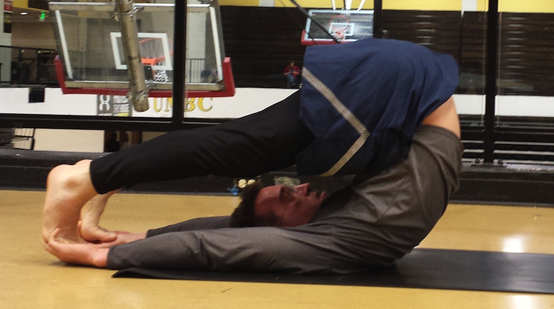

Current pose:
plow pose
Adjacent poses:
supported shoulder stand
|
ear pressure pose
|

source:
Yoga Journal
supported shoulder stand
ear pressure pose
http://bhpayne.github.io/yoga_graph/
Ben Payne
ben.is.located AT gmail